The Designs
My Role
I was the design lead defining the interaction and visual design until I was promoted to UX Manager, three months prior to the app appearing in the App Store. Shortly after the promotion, I transitioned my design duties to one of our UX designers. The majority of what shipped in the 1.0 version of the app was the result of my designs. Below you'll find the app's key screens to get a sense of how the app is designed.
Prototypes and Usability Tests
For early versions of the designs, we brought users into the office to click through prototypes I created. This allowed us to identify some of the stumbling blocks users had and better streamline each of the primary user flows. We simplified the buy process to the point that some delighted users have said is "too easy to invest."
- 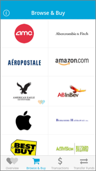
- 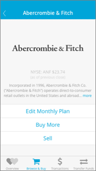
- 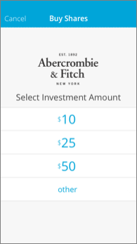
- 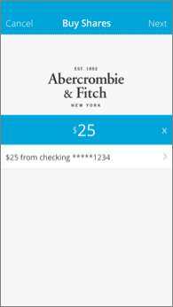
- 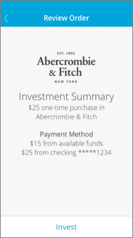
- 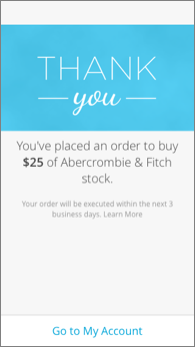
- 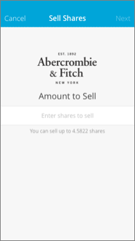
- 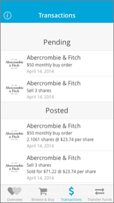
- 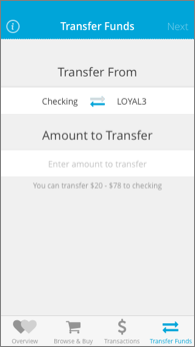
Creating the Style Guide
About the Style Guide
The best way for us to ensure consistency in design and implementation was to make sure that the entire team was on the same page with the types of iOS widgets we used as well as how they looked. I created the style guide to define all the various widgets the app would need and documented them. To the left is the list of all widget types and below are some examples of what they looked like.
Documenting the Design
About the Documentation
An effective way for me to communicate the designs to the engineering team was to create a design document. In that document, each screen, state, and specific size/color/style was shown to ensure the engineering team had a design to match their implementation. Below you'll see a few examples of what is contained in the design document.
Account Overview Showing Stocks and IPOs
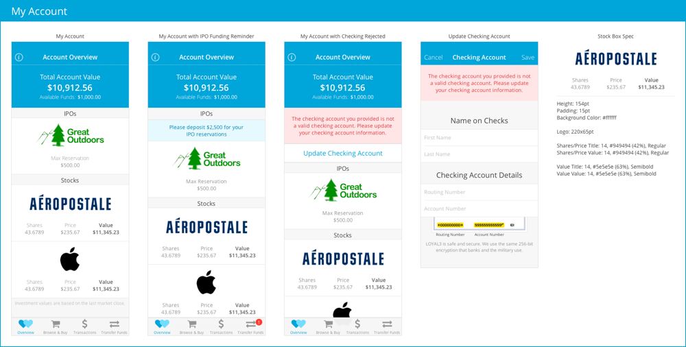The Purchase Flow
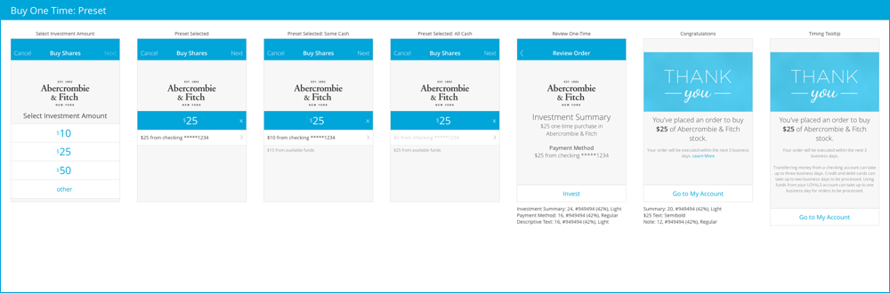Various States of the Nav Bar
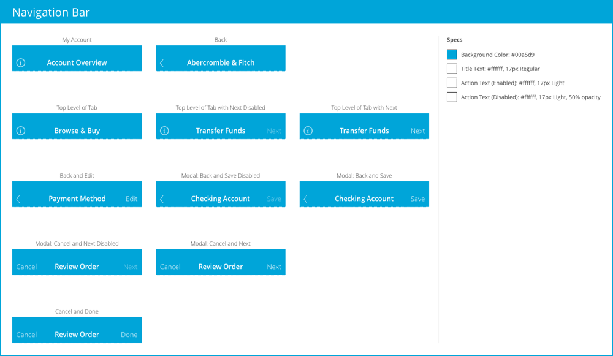What Else?
Design QA
After my years at Palm working on mobile designs, I was used to finding bugs both functional and design related. Prior to the app shipping, I logged or reported over a hundred issues that needed fixing. This greatly helped ensure the design quality was up to our high standards.
What's Next
There are a lot of features that we still need to design and build such as creating an account, enrolling in IPOs, and showing account performance. To make this a fully featured app, a lot of work still needs to be done. As the UX Manager, I'll be overseeing all of this but the specific design work will be completed by the design lead.